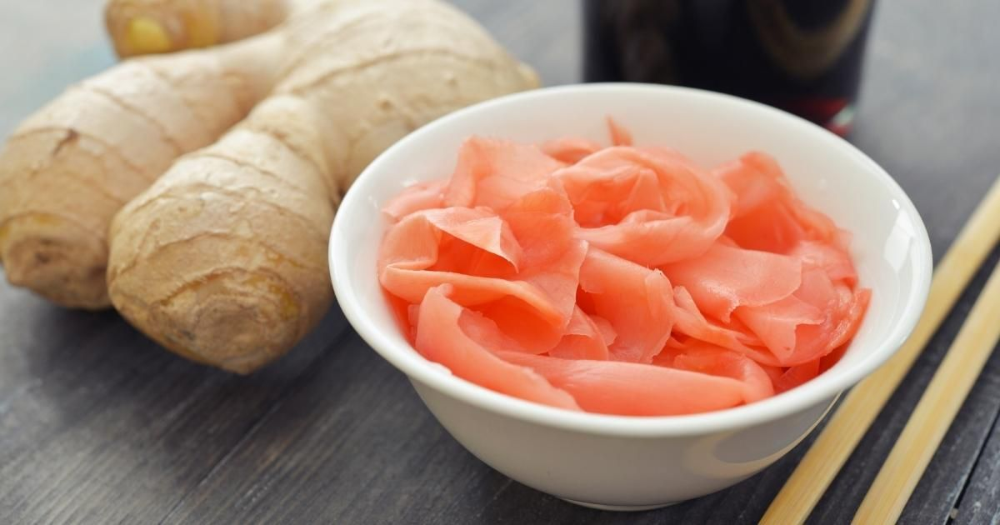

Home

Pickled Ginger
Description
Pickled ginger is a condiment made from young ginger root that has been
marinated in a sweet and tangy vinegar solution. It is often served with
sushi and sashimi, but can also be enjoyed as a palate cleanser or a side
dish. It has a spicy and sweet taste and often tastes optimal with lemons.
Ingredients
- 1 cup of young ginger root
- 1/2 cup of rice vinegar
- 1/4 cup of sugar
- 1 teaspoon of salt
Instructions
- Peel the ginger and slice it thinly.
- In a saucepan, combine the rice vinegar, sugar, and salt.
- Heat the mixture over medium heat until the sugar dissolves.
- Add the sliced ginger to the saucepan and simmer for 5 minutes.
- Remove from heat and let it cool.
- Transfer the ginger and liquid to a jar and refrigerate for at least
24 hours before serving.